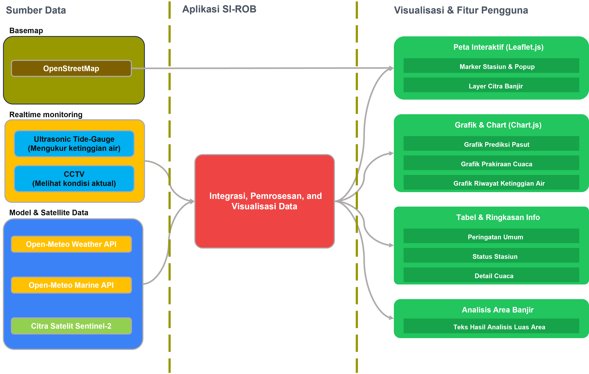

Memuat data...
Silakan tunggu.
Ringkasan Cuaca & Pasut (Dumai)
Memuat ringkasan...
Status Stasiun
Memuat status stasiun...
Informasi Cuaca Detail
Memuat...
--°C
Suhu
--°C
Kelembaban
--%
Curah Hujan
-- mm
Kecepatan Angin
-- km/j
Arah Angin
--° --
Temperatur Per Jam
Peluang Hujan
Angin Per Jam
Prakiraan 7 Hari
Memuat data grafik...
Data Pasang Surut
Pilih titik pemantauan dari peta, GPS, atau input manual. Tentukan rentang waktu untuk meng-overlay grafik dan mengekspornya ke format XLSX.
Grafik Pasang Surut MSL (Per 15 Menit)
Pilih Titik Lokasi
Tambahkan maksimal 6 titik. Grafik akan diperbarui secara otomatis ketika Anda mengubah tanggal atau mengelola titik pantau.
Daftar Titik (Koordinat):
Kabupaten Kampar, 3 Maret 2025
Analisis Dampak Banjir
Mengalkulasi luas area terdampak...
Tentang SI-ROB
SI-ROB (Sistem Integrasi Pemantauan Banjir Rob) adalah sebuah dashboard inovatif yang dirancang untuk memberikan pemantauan dan peringatan dini terhadap ancaman banjir rob secara real-time, terintegrasi dengan data cuaca dan pasang surut terkini.
Fitur Utama
- Pemantauan Real-Time pada Peta Interaktif
- Integrasi Data Cuaca & Pasang Surut
- Sistem Peringatan Dini 3 Tingkat (Aman, Waspada, Bahaya)
- Arsip Citra Satelit untuk Analisis Kejadian Banjir
- Analisis Estimasi Luas Terdampak Banjir (NDWI)
- Prakiraan Cuaca 7 Hari & Grafik Interaktif
- Fitur Unduh Data Pasang Surut (CSV & XLSX)
- Notifikasi Peringatan Dini via Email
Sumber Data
- Citra Satelit: Copernicus Sentinel-2
- Cuaca & Pasut: Open-Meteo API
- Peta: OpenStreetMap, Esri, Leaflet.js
- Grafik & Ekspor: Chart.js, SheetJS
Rencana Pengembangan & Prototipe
Sistem yang ditampilkan saat ini merupakan versi demo untuk proposal PFSAINS 2025 yang berfokus pada visualisasi data dan antarmuka pengguna, dengan data yang disimulasikan berdasarkan API publik. Pengembangan selanjutnya adalah validasi lapangan dengan perangkat keras sesungguhnya.
Rencana pengembangan mencakup dua fitur utama untuk meningkatkan akurasi dan validasi data secara real-time:
- Integrasi Sensor In-Situ via MQTT: Pemasangan stasiun sensor tinggi muka air (pasut/sungai) di salah satu lokasi virtual. Data telemetri dari sensor akan dikirim secara real-time via protokol MQTT untuk kalibrasi dan validasi model prediksi yang lebih akurat.
- Live Feed CCTV: Pemanfaatan kamera CCTV untuk pemantauan visual. Protokol MQTT juga dapat digunakan untuk mengirim notifikasi dan snapshot gambar secara efisien, sementara streaming video diakses melalui protokol terpisah (seperti RTSP) untuk menampilkan kondisi lapangan secara langsung di dashboard.
Untuk visualisasi desain dan penempatan perangkat keras, lihat model 3D interaktif kami: di sini.
Dokumentasi Prototipe Awal
.png)
Prototipe Awal Tide Gauge (V1)
.png)
Prototipe Awal Tide Gauge (V2)
.png)
Render Model 3D Stasiun Sensor
Arsitektur Sistem SI-ROB
Diagram berikut mengilustrasikan alur data dan arsitektur keseluruhan dari sistem SI-ROB, mulai dari akuisisi data di lapangan hingga penyajian informasi kepada pengguna akhir.

Tim Pengembang

Ahmad Dhuha Habibullah

Nabila Afifah Azuga